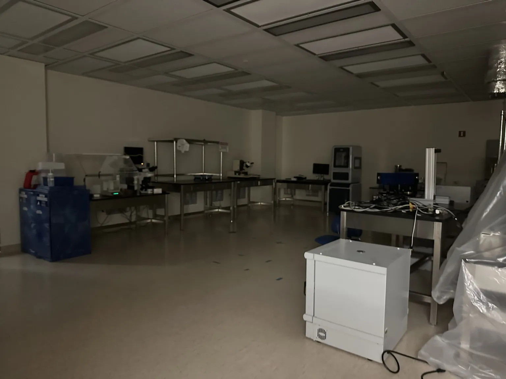

Semiconductor fabrication
Learning to make devices a few hundred nanometers at a time — photolithography, thermal evaporation, and the patience it takes to get thin layers to behave.

Why this work matters to me
Most of my projects live at the board level — you buy a component, you trust its datasheet, you design around it. Cleanroom work is the layer underneath that: it's where the component itself comes from. Spending time there changed how I read a datasheet, because I've now seen how much process control sits behind a single specified number.
It's also the most unforgiving work I've done. A device is built up one layer at a time, and a mistake in an early step doesn't announce itself — it shows up at the end, as a device that doesn't work, with no obvious way to tell which of the fifteen preceding steps was responsible.
The processes
Photolithography
Spin-coating photoresist, exposing through a mask, and developing — transferring a pattern onto the wafer. Alignment between layers is where the precision lives.
Thermal evaporation
Depositing thin metal films under vacuum, controlling rate and thickness to get a layer that's uniform and adheres properly.
Process control
Consistent handling, contamination control, and careful record-keeping — the habits that make one run comparable to the next.
What I fabricated
I worked on sensor devices and OLED structures, which are a good pairing to learn on: both are built from stacked thin films, and both fail in ways that teach you something specific. OLEDs in particular are punishing about layer quality and contamination — a device either lights up or it doesn't, and the answer is a fairly blunt verdict on how careful you were.
- Alignment is everything.Layers that are individually perfect still give you nothing if they don't register with each other.
- Contamination is invisible until it isn't.Most of cleanroom discipline is protecting against problems you'll never directly observe.
- Repeatability beats a single good result.One working device is luck; a process that produces working devices is engineering.
- Patience is a technical skill.Rushing a step to save ten minutes routinely costs an entire run.
Gallery
